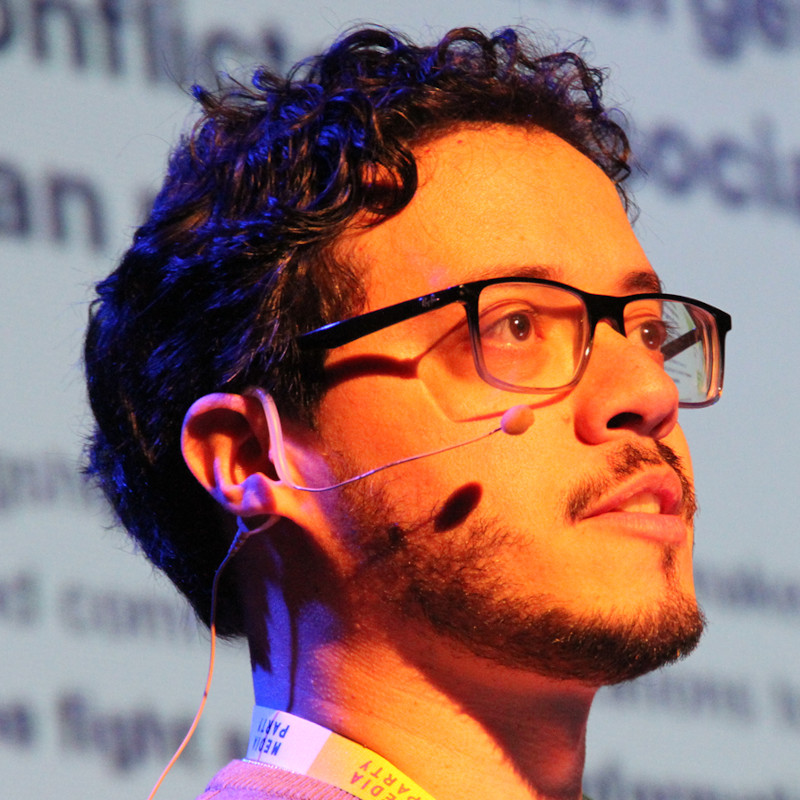
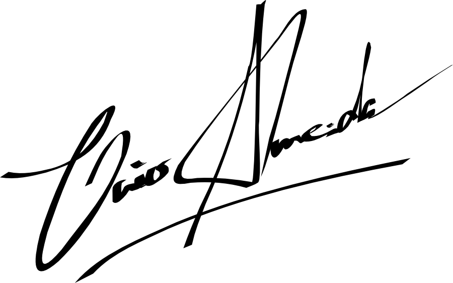
Hello! I'm Caio Almeida, senior full-stack software engineer with 20 years of experience, primarily working with Ruby On Rails and JavaScript for the last 18 years, and React.JS since 2016. Over the years, I've been working for companies in Brazil, Canada, England - and mostly in the United States for the last 15 years, most of the time in the technology-for-social-impact space, with experience across a wide range of areas, from data visualization to WhatsApp integration. I'm a Certified Ruby Programmer and Certified WhatsApp Developer, I hold bachelor's and master's degrees in computer science from the Federal University of Bahia, Brazil, and I'm currently a student in the PhD program at the same university. In 2018, I was one of the five software developers selected to join Data4Change, a data visualization workshop on human rights in the Middle East that took place in Beirut, Lebanon. I also created and maintain some open source projects and collaborate as a developer on other open source projects. Other than that, I have presented my work at national and international conferences, both technical (particularly about Ruby) and academic. Technical conferences include RubyConf (Portugal), Rubyfuza (South Africa), WrocLove.rb (Poland), Mexico on Rails (Mexico), RubyConf Brazil, Mozilla Festival, International Free Software Forum, among others. Academic conferences include SIBGRAPI (Peru), PROPOR (Portugal), WebMedia, W3C Web Conference, International Free Software Workshop, among others.
Olá! Eu sou Caio Almeida, engenheiro de software full-stack sênior com 20 anos de experiência, trabalhando principalmente com Ruby On Rails e JavaScript nos últimos 18 anos, e React.JS desde 2016. Nestes anos, trabalhei para empresas no Brasil, Canadá, Inglaterra - e majoritariamente nos Estados Unidos, nos últimos 15 anos, na maior parte do tempo na área de tecnologia para impacto social, com experiência em um amplo espectro que vai de visualização de dados a integração com WhatsApp. Eu sou Programador Ruby Certificado e Desenvolvedor WhatsApp Certificado, mestre e bacharel em ciência da computação pela Universidade Federal da Bahia (UFBA) e atualmente aluno do doutorado na mesma Universidade. Em 2018, fui um dos 5 desenvolvedores de software do mundo inteiro selecionados para participar do Data4Change, um workshop de visualização de dados sobre direitos humanos no oriente médio, ocorrido em Beirute, no Líbano. Eu também criei e mantenho alguns projetos de código aberto e colaboro como desenvolvedor em outros. Além disso, já apresentei meu trabalho em conferências nacionais e internacionais, tanto técnicas (principalmente sobre Ruby) quanto acadêmicas. Conferências técnicas incluem RubyConf (Portugal), Rubyfuza (África do Sul), WrocLove.rb (Polônia), Mexico on Rails (México), RubyConf Brasil, Mozilla Festival, Fórum Internacional de Software Livre (FISL), dentre outros. Conferências acadêmicas incluem SIBGRAPI (Peru), PROPOR (Portugal), WebMedia, Conferência Web W3c, Workshop Internacional de Software Livre, dentre outros.
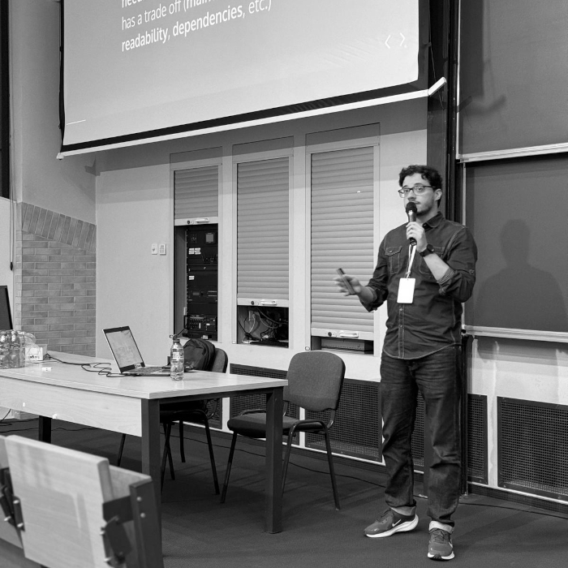
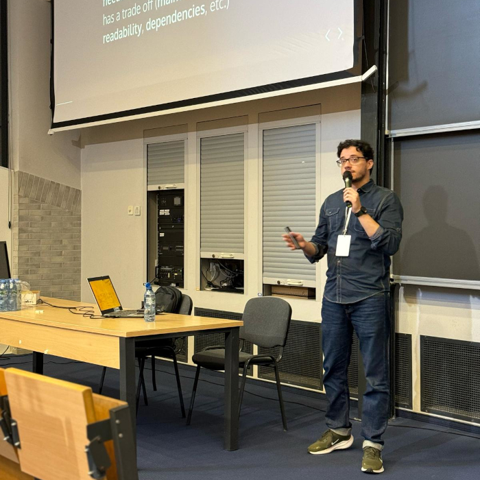
WrocLove.rb, Wroclaw, Poland, 2024
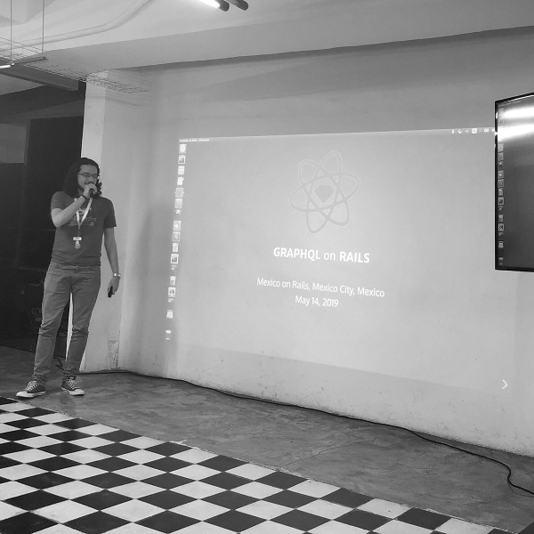
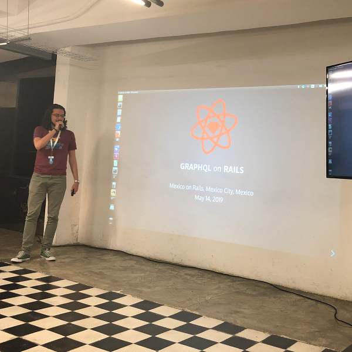
Mexico On Rails, Mexico City, Mexico, 2019
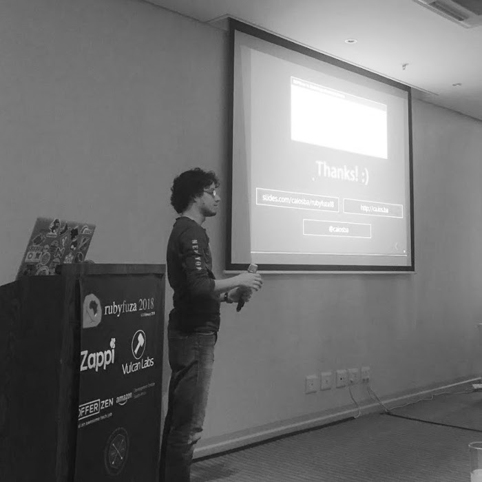
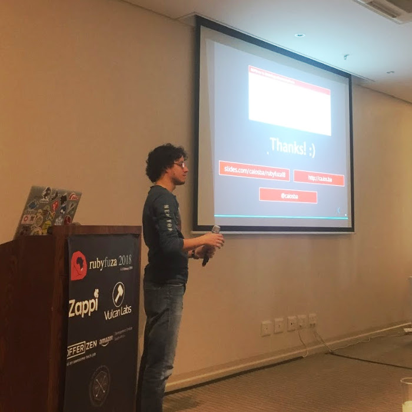
Rubyfuza, Cape Town, South Africa, 2018
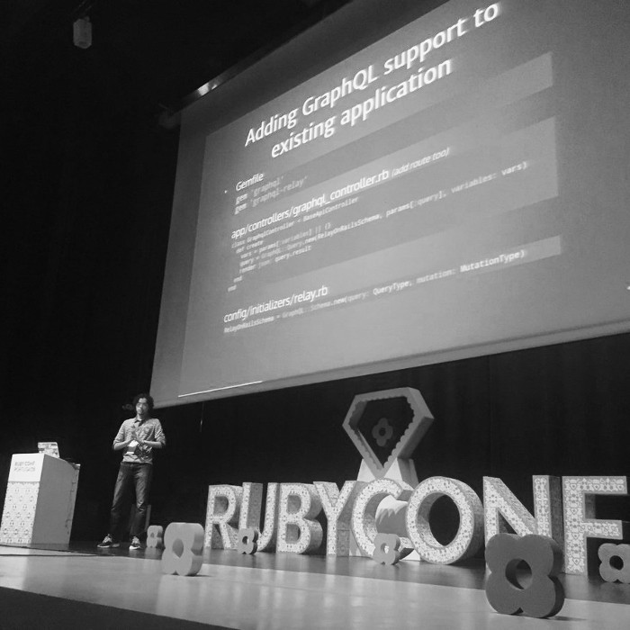
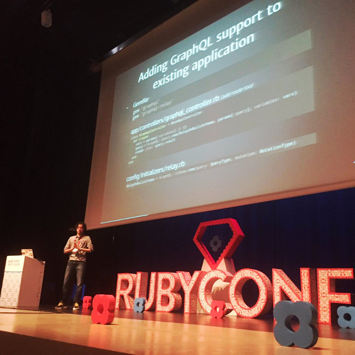
RubyConf, Braga, Portugal, 2016
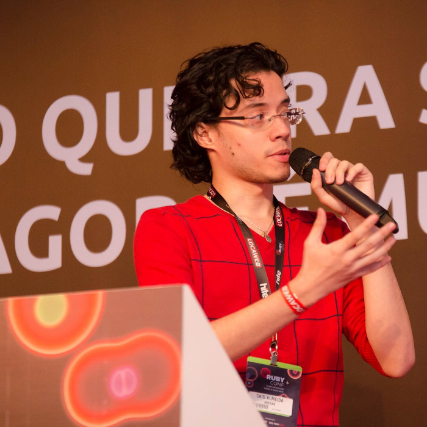
RubyConf, São Paulo, Brazil, 2016
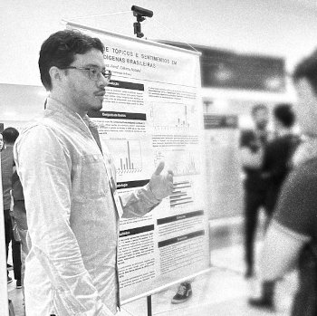
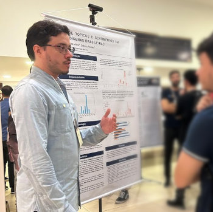
STIL, Fortaleza, Brazil, 2025
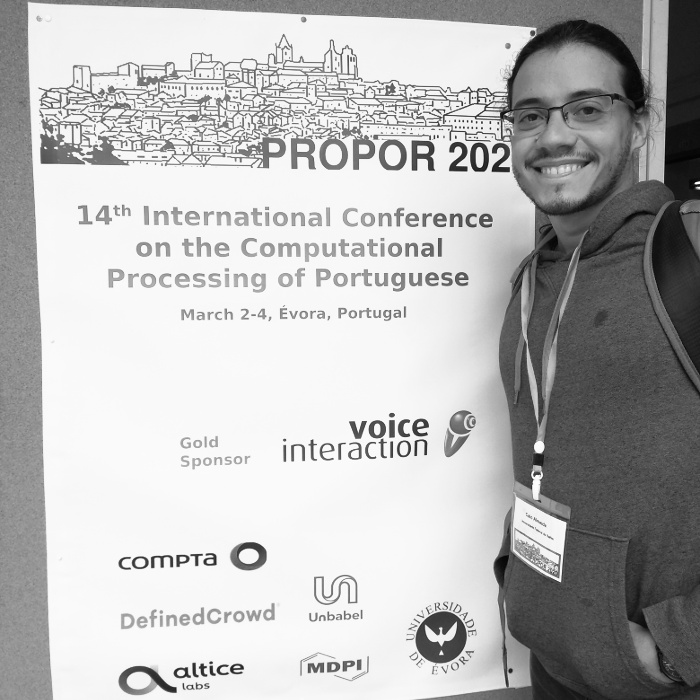
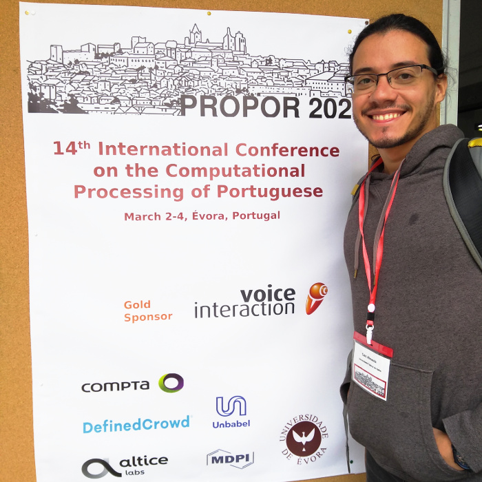
PROPOR, Évora, Portugal, 2020
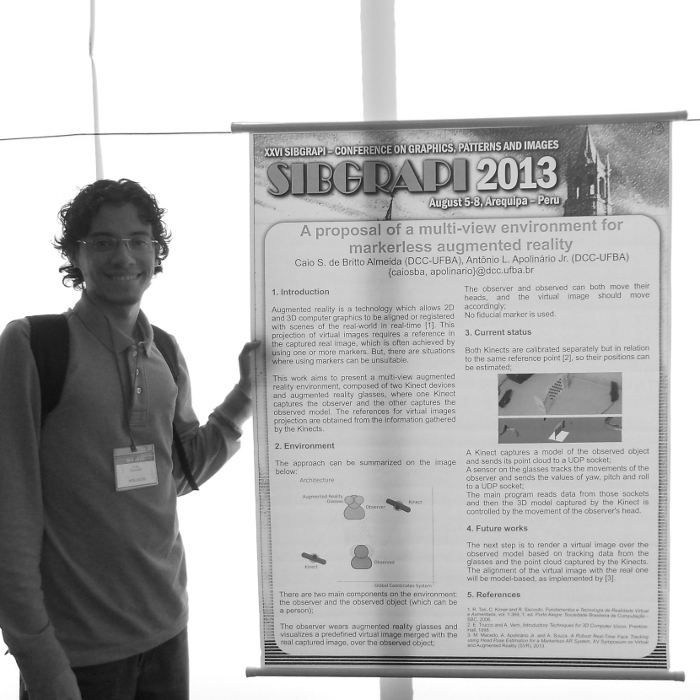
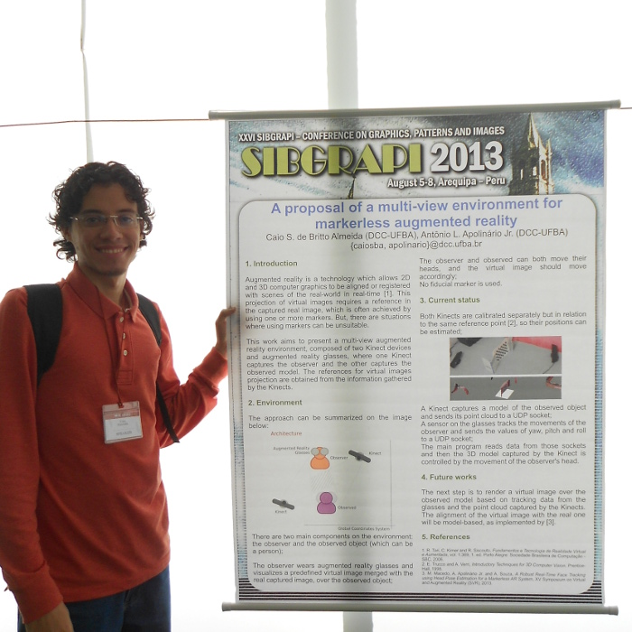
SIBGRAPI, Arequipa, Peru, 2013
On the personal side, I like music, traveling, bikes, beers and books. You can also follow me on Twitter, Facebook, Instagram, Untappd and Skoob.
c@ios.ba